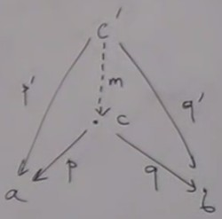

Complement on terminal objects
We said that there is a unique incoming arrow from every object to a terminal object, but said nothing about outgoing arrows. There are usually outgoing arrows, and these arrows help us to defined the generalized elements in other objects.Every arrow from the terminal object to an other object is a definition of a generalized element in this other object.
This happens in the Set category : when you map a singleton set to an other set, that's equivalent of picking one element in this set : the element of the singleton set is mapped to a particular element of the other set. There are many morphisms and each of them picks a different element.
So we can generalize this to other categories saying that if I have a terminal object in a category and morphisms from terminal to other objects, it's like picking an element in the other object, without knowing what an element is.
It's important because there are many categories similar to the category of sets, and if they have a terminal object, it provides a way of picking elements.
Opposite category
When we saw universal constructions of terminal and initial objects, we studied in detail terminal objects, and skipped initial objects saysing that it's the same if we invert the arrows.This trick of inversing arrows has a deep meaning. Every construction in category theory has its opposite construction that is done by reversing arrows. For example, defining a terminal object gives for free the definition of the initial object by repeating the same thing with inverted arrows..
This property is related to the fact that for any category wa can always create a new category identical to the first, but with arrows reversed.
This new category is called the opposite category and is noted Cop
The inverse of a function
f is noted fop
from every arrow
f going from a to b there is an arrow fop going from b to a.
But how do we know that Cop is a category ?
-
Composition : if we have two arrows
f :: a → bandg :: b → c, we have their compositiong o f :: a → c.
We can associate tog o fin the new category(g o f)op :: c → a.(g o f)op = fop o gop - Identity : when we invert identity, we have identity again.
- Associativity comes automatically
C we could say that the initial object is the terminal object in the opposite category.
Product
In the ancient world of set, there is something called the cartesian product. The cartesian product of two setsa and b is the set of pairs composed by an element of a and an element of b.
For example a plane is the cartesian product of x and y axis. To express cartesian product in terms of categories, what are the properties ?
For every cartesian product of two sets, there are these two special functions called projections.
In Haskell, they are called first (
fst) an second (snd).
 So here we have a pattern :
So here we have a pattern : a and b are fixed ; the pattern is : pick an object c which has two arrows, one going to a and one going to b. c might be a cartesian product, but we don't know. There may be many other such c. One of them is the cartesian product, which one is the correct one ?
Universal construction to the rescue, we need to be able to rank them.  We say that
c is better than c' if there is a unique morphism m from c' to c such as
p o m = p' and q o m = q'
With multiplication we would say that
p' factorizes p into p times m and q' factorizes q into q times m.
p' and q' have a common factor, m.
m takes the worst of these two projections, condenses them ; m can shrink stuff or not cover. All the non-injectivity or non-surjectivity is concentrated into m.
Back to programming : the real product of
a and b is a pair of type (a, b) in Haskell ; expressed as <a,b> in C++
With these two projections
fst(a, _) = a
snd(_, b) = b
a = Int ; b = Bool ; the product is a pair (Int, Bool)
Examples of bad product :
Type
Int is a bad candidate for product, but it has projections :
p' :: Int → Int, for example p' = Id
q' :: Int → Bool, for example q' = True
So what is the projection
m ?
m :: Int → (Int, Bool)
m x = (x, True)
m is bad because non surjective, it misses the pairs (Int, False)
An other bad candidate is a triple
(Int, Int, Bool)
We can define projections too :
p' :: (Int, Int, Bool) → Int ; for example p'(x, _, _) = x
q' :: (Int, Int, Bool) → Bool ; for example q'(_, _, b) = b
So what is the projection
m ?
m :: (Int, Int, Bool) → Bool
m(x, y, b) = (x, b)
m is bad because non injective
Each candidate has a flaw, and we can distill these flaws in
m.
The definition of product is :
A categorical product of two objects
Which has the universal property :
For any object
There is a unique morphism
a and b is a third object c with two projections
p :: c → a
q :: c → b
Which has the universal property :
For any object
c' with projections
p' :: c' → a
q' :: c' → b
There is a unique morphism
m :: c' → c such as
p' = p o m
q' = q o m
p' = p o m and q' = q o m is equivalent to say that the diagram commutes.
We say that a diagram commutes if two paths give the same results.
Not every category has product, and if it has, maybe it doesn't have it for any pair of objects.
In the category of sets, every two sets have a product.
If we want to imitate Set category, we will want to have categories which have initial objects, terminal objects, product and coproduct.